Automation, and the incident
Two jobs that run without anyone touching them, and one real fault we caused, found, fixed and prevented.
1. Two automations (WS-E)
A. Hourly backup
What: dumps the MongoDB database straight to S3, checks the file is not empty, and saves the list of Parameter Store settings. E-mails us if any step fails.
How it runs: systemd timer libralink-backup.timer on the server, at 5 minutes past every hour.
Code: ops/backup.sh, ops/systemd/libralink-backup.*
Watched by: alarm libralink-backup-missing.
B. Health check from outside
What: a Lambda function opens the public HTTPS site like a user: /health must say OK and the home page must contain our theme. Publishes HealthCheckOK (1 or 0) and the response time.
How it runs: EventBridge rule libralink-healthcheck-15min, every 15 minutes.
Code: ops/lambda/healthcheck.py, deployed by ops/aws/10-healthcheck.sh
Watched by: alarm libralink-healthcheck-failed (also fires if the function stops running).
Also running unattended (not counted as one of the two): the request logger every minute, and — after the incident — log rotation every 15 minutes.
Proof they ran on their own
| Automation | Unattended run 1 | Unattended run 2 | Run 3+ |
|---|---|---|---|
| Hourly backup | 2026-11-09 16:05 PHT (08:05:04Z), 6,294 bytes, ok | 2026-11-09 17:05 PHT (09:05:04Z), 14,231 bytes, ok | 18:05, 19:05, 20:05 ok. 21:05 failed during the incident (disk full) and e-mailed us (E-08f). Total: 118 of 120 scheduled runs succeeded (9 Nov 16:05 → 14 Nov 15:05 PHT); every run from 9 Nov 23:05 onwards was OK. |
| Health check | 2026-11-09 17:01 PHT (09:01:31Z), ok, 1.3 s | 2026-11-09 17:16 PHT (09:16:32Z), ok, 1.6 s | 17 of 17 ok from 17:01 to 21:01; 21:16 failed (HTTP 502, during the incident); 21:31 ok again. Total: 472 of 473 scheduled runs OK (9 Nov 17:01 → 14 Nov 15:01 PHT). |
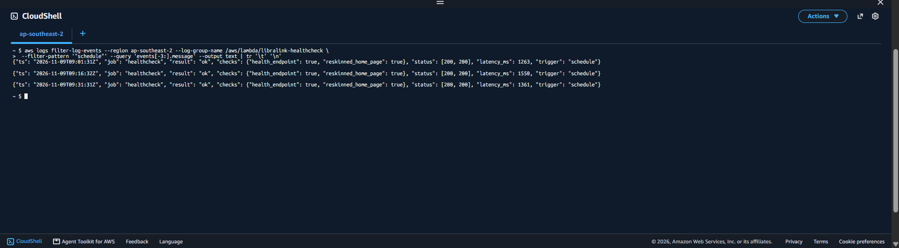
evidence/E-14-automation-runs.png: CloudWatch Logs showing several "job":"backup","result":"ok" lines with timestamps, and several health-check lines with "trigger":"schedule" (or the E-14 section of bash ops/aws/12-evidence.sh).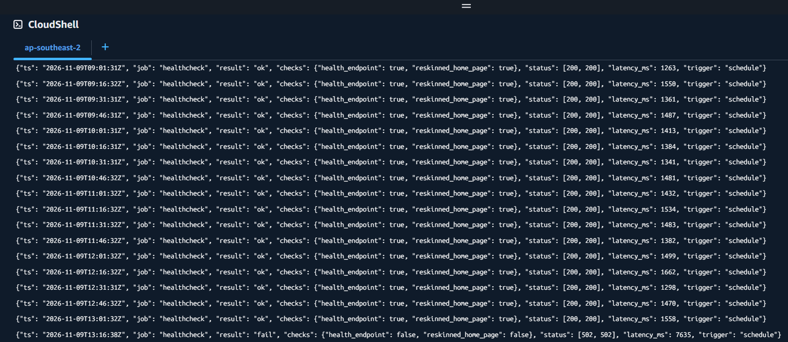
evidence/E-14b-healthcheck-runs.png."trigger": "schedule" — including the one failure during the incident.How to deploy them
Both are in the repository with the rest of the code. The backup is installed by the server's first-boot script (ops/bootstrap-ec2.sh); the health check by running bash ops/aws/10-healthcheck.sh in CloudShell. Full steps: README.md › "Deploying the automations".
2. The incident: the disk filled up (WS-F)
Timeline (9 November 2026)
| When (PHT) | What happened |
|---|---|
| 20:53:46 | Fault starts. John ran ops/fault/fill-disk.sh, which writes one huge file into /var/log/libralink/, the log folder with no rotation — the same thing a runaway debug log would do. Disk 43% → 100%, 20 MB left. |
| 20:56 | Surprise: the app still answered ("5 books"). Chat messages are only a few KB, so 20 MB was still room. A real runaway log keeps growing, so we let it. |
| 20:57:44 | Alarm: libralink-disk-high went to ALARM and e-mailed both of us (E-08c). |
| 20:59:29 | The log grew into the last 20 MB (60 KB left). |
| 20:59:48 | MongoDB crashed ("Segmentation fault" in its log). From now on users' new questions fail: the app shows "Something went wrong. Here's the specific error message we encountered: 'An unknown error occurred.'" |
| 21:01:32 | Alarm: libralink-nginx-5xx (server errors returned to users). This is the e-mail we noticed first. |
| 21:01 | The outside health check still said OK — it does not test the database (see "What else we learned"). |
| 21:03 | Investigation started with Session Manager (commands below). |
| 21:05:06 | Side effect: the hourly backup failed (the database was down) and e-mailed us (E-08f). |
| 21:16:38 | The health check failed (HTTP 502); its alarm fired at 21:17:56. |
| 21:23:22 | Fixed: apply-fix.sh removed the file and restarted the app (the fix itself took 9 seconds); answers working again. |
| 21:23:28 | Prevented: log rotation and journal cap installed and verified with a 120 MB test log. |
| 21:24:44 | libralink-disk-high back to OK (e-mail E-08e). |
| 21:47:56 | libralink-healthcheck-failed back to OK, 30 minutes after it fired (its 30-minute window). |
Time to detect (fault start → alarm): 4 minutes (20:53:46 → 20:57:44), and the alarm came 2 minutes before users were affected. Time to fix (alarm → working again): 26 minutes (20:57:44 → 21:23:22); users could not ask questions for about 24 minutes (20:59:48 → 21:23:22). Most of the fix time was investigating, plus 4 minutes lost because we did not spot the first alarm e-mail. Times come from /var/log/libralink/incident-timeline.txt, the CloudWatch alarm history and the container logs.
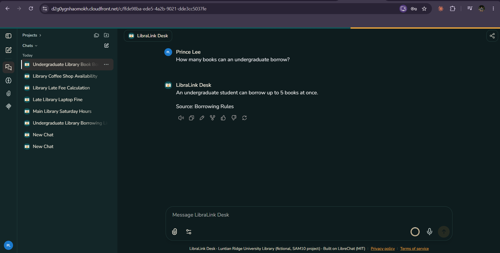
evidence/E-15c-still-working.png.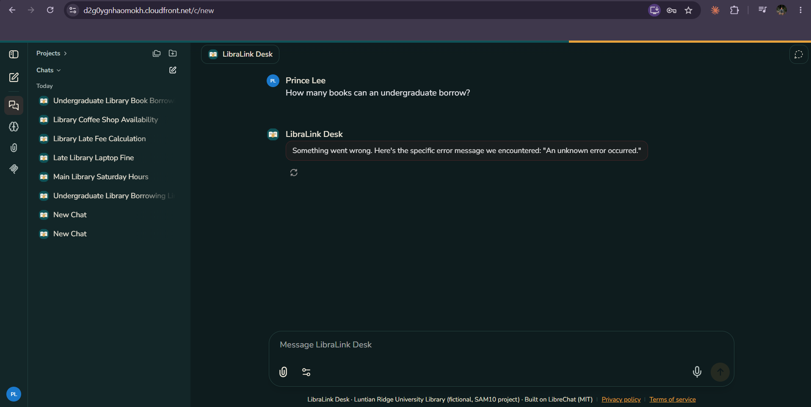
evidence/E-15c-user-error.png.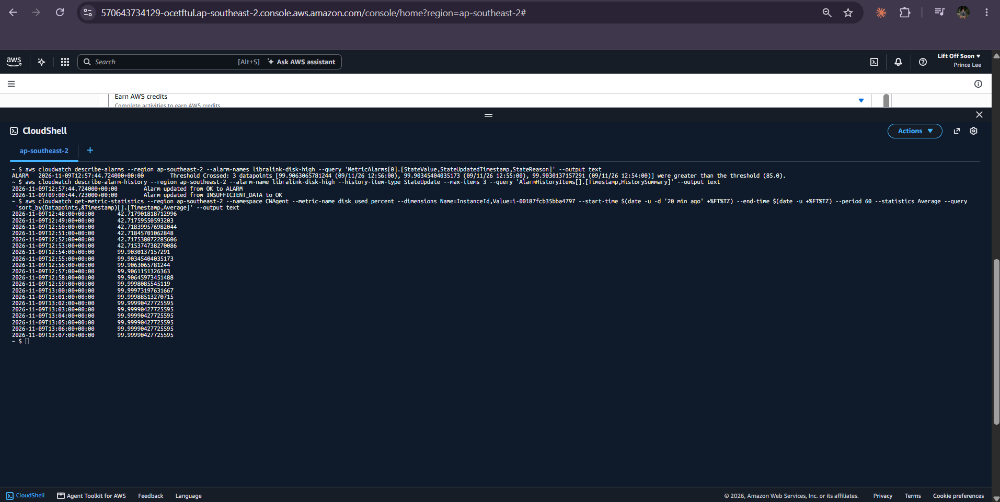
evidence/E-15d-alarm-history.png.Investigation
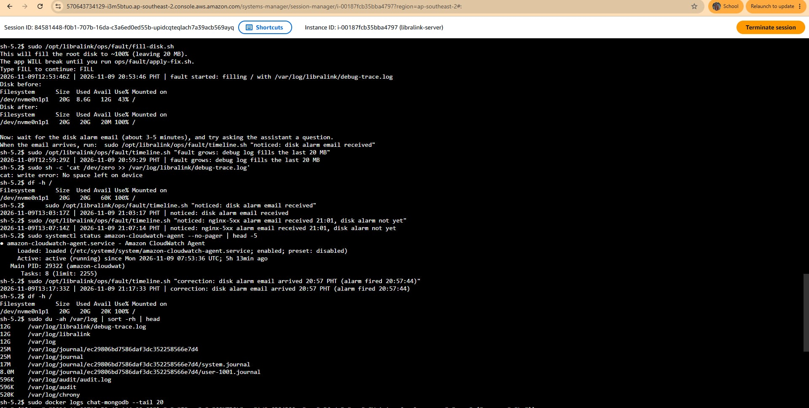
evidence/E-15-investigation-1.png.df: 100%, 20 KB free. du: /var/log/libralink/debug-trace.log is 12 GB.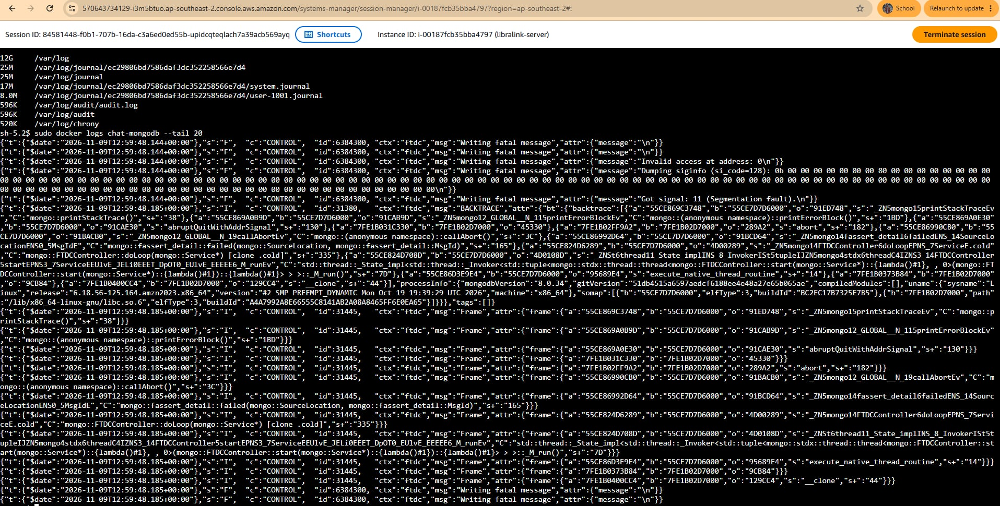
evidence/E-15-investigation-2.png.docker logs LibreChat could not even be read. /etc/logrotate.d/ has no rule for libralink.df -h / # root disk 100% used sudo du -ah /var/log | sort -rh | head # the biggest file: /var/log/libralink/debug-trace.log docker logs chat-mongodb --tail 20 # database errors while the disk is full docker logs LibreChat --tail 20 # app errors when saving messages ls /etc/logrotate.d/ # no rule for /var/log/libralink
Root cause
The disk filled because a log file in /var/log/libralink/ had no size limit and no rotation, so it grew to 12 GB until the 20 GB disk was full; with no free space MongoDB crashed (20:59:48), so saving new messages failed and users got errors instead of answers. Restarting would not have helped — the full disk would still be full. (We created the oversized file ourselves to simulate a runaway log, as the brief allows.)
The change that stops it happening again
- Log rotation (
ops/fault/logrotate-libralink): any log in/var/log/libralinkover 50 MB is rotated and compressed; only 5 old copies are kept. A systemd timer checks every 15 minutes. - Journal cap: the system journal may use at most 200 MB.
- Earlier warning: the disk alarm checks every minute at 85%, so we hear about it well before 100%.
Evidence the change worked: ops/fault/verify-fix.sh wrote a 120 MB log on purpose; the rotation cut it back and compressed it (120 MB → 0 bytes, plus a 418 KB compressed copy; the whole folder was 668 KB afterwards), and the disk alarm stayed OK.
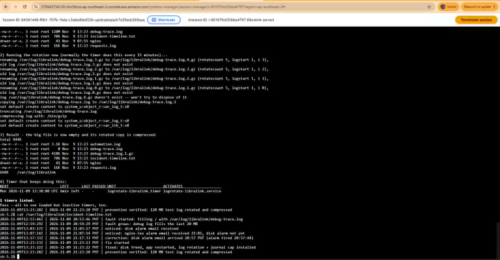
evidence/E-15b-prevention.png: output of sudo /opt/libralink/ops/fault/verify-fix.sh (sizes before and after, and the timer listing), plus the disk graph on the dashboard showing the spike and the return to normal.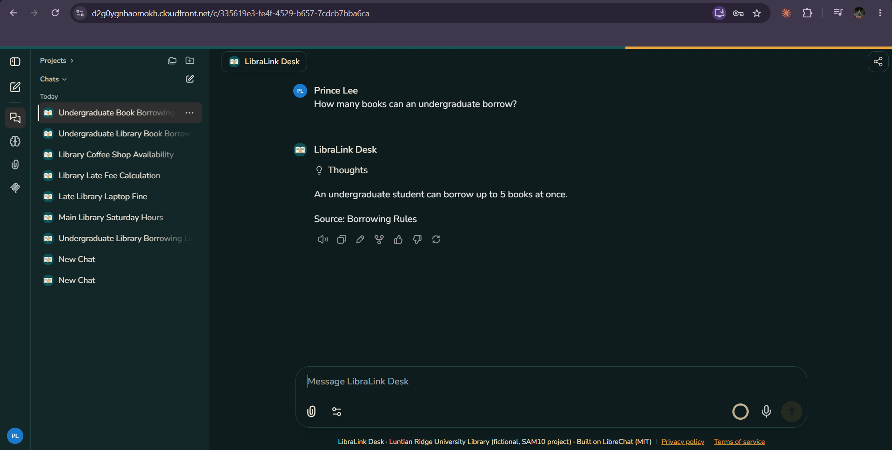
evidence/E-15e-working-again.png.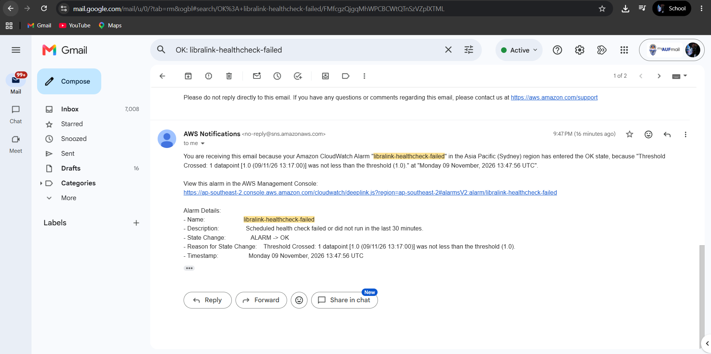
evidence/E-08g-healthcheck-ok-email.png.What else the incident taught us
- The outside health check is too shallow. At 21:01 it said OK while users were getting errors, because
/healthonly asks "is LibreChat running?", not "can it reach the database?". It only failed at 21:16, when the app itself gave up. Next step: check a page that needs the database. - A failed backup left an empty file in S3, and the restore script would have picked it as "the newest backup". Fixed:
restore-test.shnow skips files under 100 bytes (details on Operations). - The disk alarm was the earliest warning — 2 minutes before any user was affected — but only if someone reads it. We missed it for 4 minutes in a busy inbox.
- At 100% with 20 MB left, nothing visibly broke. The danger is the last few megabytes, which is why the alarm is at 85%, not 100%.
A second, smaller incident we caused ourselves
At about 22:00 we updated the server with a plain git pull to install the restore fix. Our repository is edited on Windows, which does not keep Linux's "executable" mark on files, so the pull replaced ops/backup.sh without it. At 22:05 systemd could not start the backup at all: "Failed to locate executable /opt/libralink/ops/backup.sh: Permission denied".
- Why no e-mail came: the "backup FAILED" e-mail is sent by the backup script itself. The script never started, so it could not report anything. We found it at 22:09 because we checked the log by hand.
- What would have caught it: the outside alarm
libralink-backup-missing(no good backup in 2 hours) — this is exactly why a job should be watched from outside, not only by itself. - Fix: made the scripts runnable again and ran a backup by hand at 22:12 (ok, 30,878 bytes).
- Prevention: the systemd services now start the scripts with
/bin/bash, so the mark no longer matters, and the server is only updated withsudo bash ops/update-server.sh, which pulls, restores the marks and reinstalls the services. We ran it twice to check it is safe to repeat.
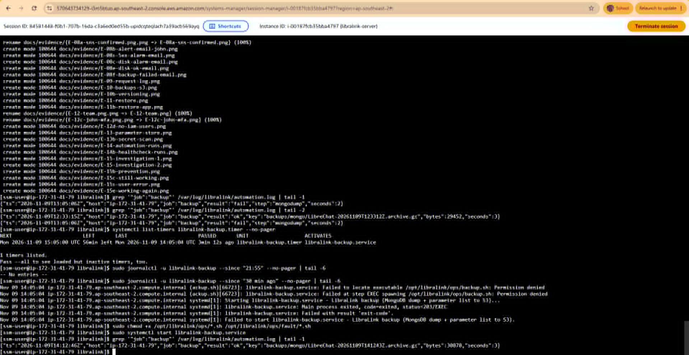
evidence/E-14c-backup-permission-fix.png.3. Runbook: disk full on libralink-server
RUNBOOK: Disk full on libralink-server
Owner: LibraLink team Last tested: 2026-11-09 Takes: ~10 minutes Ask: John Micheal Agustin
1. WHAT THIS IS FOR
Getting LibraLink Desk working again when the server's root disk is (nearly) full.
2. HOW YOU KNOW YOU NEED IT
- Alarm e-mail "ALARM: libralink-disk-high" (disk above 85%), and maybe
"libralink-answers-failed-rate" or "libralink-nginx-5xx".
- Users say the assistant shows an error instead of answering.
Command that shows the problem (EC2 > libralink-server > Connect > Session Manager):
df -h /
3. WHAT IT AFFECTS
Everyone: new questions and logins cannot be saved. Old chats may not load.
4. HOW TO DO IT
Step 1: sudo du -ah /var/log /opt/libralink/app/data 2>/dev/null | sort -rh | head -10
-> you should see the biggest files at the top
Step 2: If it is a log file, empty or delete it:
sudo truncate -s 0 /var/log/libralink/<file>.log
If it is Docker data: sudo docker system prune -f (removes unused images only)
-> df -h / now shows free space
Step 3: sudo lsof +L1 (deleted files still held open; restart that process if any)
Step 4: sudo systemctl restart libralink
-> after ~1 minute: curl -s localhost/health prints OK
Step 5: Make sure rotation is in place:
systemctl list-timers logrotate-libralink.timer
If missing: sudo /opt/libralink/ops/fault/apply-fix.sh
5. HOW TO CHECK IT WORKED
- [ ] df -h / is below 85%
- [ ] ask the system-card test question "How many books can an undergraduate borrow?" -> "5 books"
- [ ] no new alarms for 10 minutes (the disk alarm e-mails "OK")
6. HOW TO UNDO IT
Deleting a log cannot be undone, so copy it first if it matters:
sudo cp <file> /tmp/ (only if there is space) or upload it to S3.
docker system prune only removes images that can be downloaded again.
7. GOTCHAS
- Restarting alone does not help: the disk is still full.
- A deleted file that a process still holds open keeps using space (step 3).
- At 100% disk, Session Manager can be slow to connect; wait and retry.
- At 100% disk "docker logs" may fail ("error grabbing logs"). Use df/du and the
CloudWatch log groups instead.
- MongoDB does not slow down, it CRASHES when the disk is full. Free space first,
then restart (step 4).
- The first alarm e-mail is easy to miss in a busy inbox: search for "ALARM:".
- A backup that ran while the disk was full fails and leaves a 0-byte file in S3.
restore-test.sh skips it, but check the next hourly backup succeeds.
- The health-check alarm stays red up to 30 minutes after the fix (30-min window).
8. CHANGE HISTORY
2026-11-09 - written from the planned fault, before the test
2026-11-09 - tested end-to-end during the incident; gotchas added from what happened